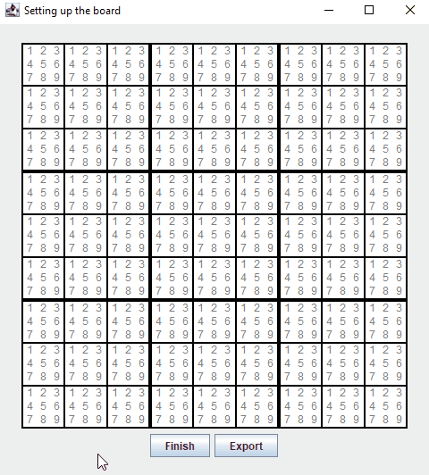
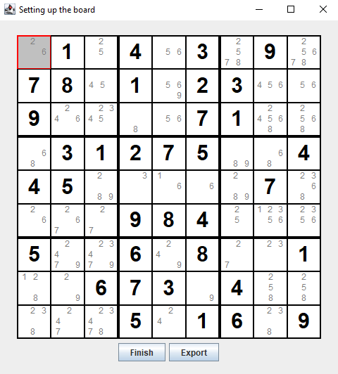
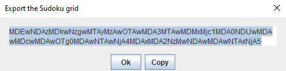
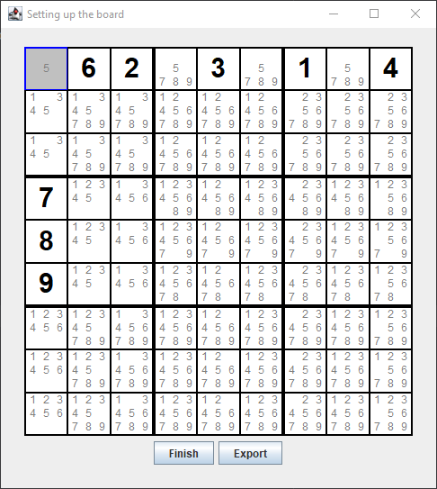
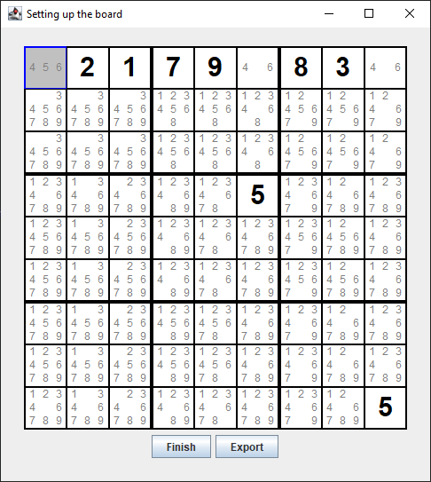
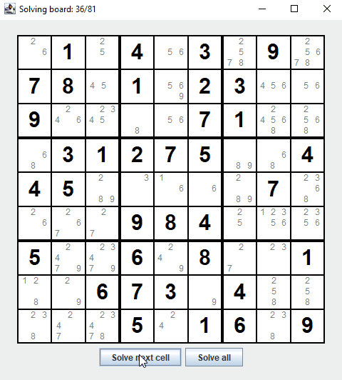
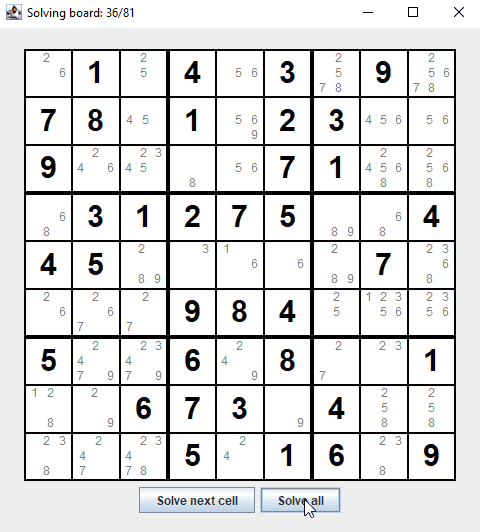
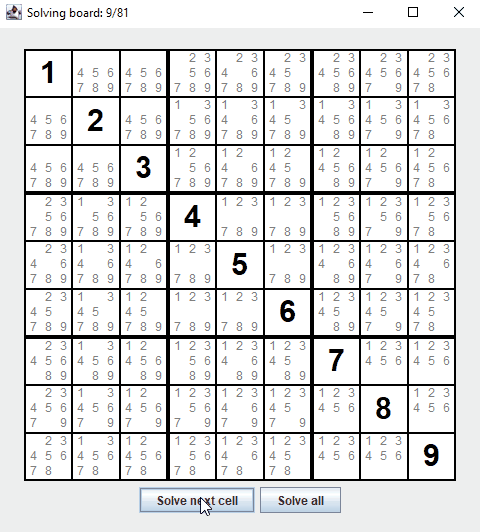

My goal with this project was to get more familiar with GUI libraries. I chose Java as a language
because it had been a while since I had used it for a personal project, and I had never created a
graphical application in Java. I wanted to create an application that didn't look "vanilla",
something that I could potentially see being shipped out by a real company. In the end, I'm not
quite sure the physical aspect of the GUI looks quite as good as I wanted it to; the application
looks somewhat empty, and I'm still using the default button style (although it would be fairly easy
to update the project to have more recent looking buttons). Nonetheless, I am still very happy with
how the application turned out, as I think the sudoku grid looks quite good, and the pencil markings
offer additional information without overloading the user with information.
Finally, the project uses gradle to standardize the building and packaging of the project, but this
solution is somewhat overkill, as there are no dependencies (Swing is already bundled with recent
java version).
Initialization
This stage represents the application launching. During development, I often found myself re-entering
the same grid over and over. To streamline my development process, I implemented a feature that I
think would be beneficial to users as well. When opening the application, the user has the option of
providing a base64-encoded version of a sudoku grid, which automatically gets loaded into the grid.
If no string is provided, the grid starts out empty.
Setup
The setup stage is used to set up the sudoku grid. If a grid was loaded using a b64 string, the
grid will be preloaded with the specified values. Users can then add or remove cells in the grid. To
help, pencil markings are automatically updated while entering new cell values. Additionally, the
application will block the user's inputs if they are trying to add an illegal value in a cell.

Pencil markings automatically update while entering new cell values.

Trying to enter an invalid value in a cell makes that cell red and blocks the input.
The setup stage can also be used to export the current grid state to the b64 string mentioned
previously.

The base64 representation can be automatically copied to the clipboard.
Solving
Currently, I have only implemented one algorithm because it fulfilled my needs. The code already uses
interfaces, so implementing new solving algorithms would be plug-and-play with the rest of the
code.
The currently implemented algorithm is an organic algorithm mimicking the way I personally solve
sudokus, namely by looking at missing numbers in a row, column or square. If there is only one
number that would be compatible with a cell, or if a missing number can only go into 1 cell for a
row, column or square, the algorithm sets the value of this cell. We can iteratively call the
algorithm until the whole board has been solved, or until the algorithm gets stuck.

The first cell can only contain one value (5).

The first cell can have more than one value, but it is the only cell in the first
row who can have the value of 5.
The application offers two options to the user, solving one cell, or solving the whole board. In both
scenarios, if the algorithm detects that it is stuck and unable to finish solving the user's board,
it alerts the user.

The sudoku board can be solved one cell at a time.

The sudoku board can also be solved all at once.

If the algorithm is unable to solve the board, it alerts the user.